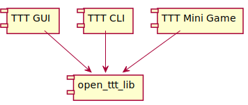

2.4. Interactions with Other Systems¶
The Tic Tac Toe library is intended to be used in other user facing applications. This includes, but is not limited to, stand alone graphical applications, command line applications, or even as a mini-game in a larger video game. The diagram in Figure 2.3 shows how the library is used by other systems.

Figure 2.3 Diagram showing how the library is used by other applications.¶
The other applications link directly to open_ttt_lib. The library does not
provide any ways of remote access, e.g. via a network interface, and it does not
save any state the computer’s persistent storage.